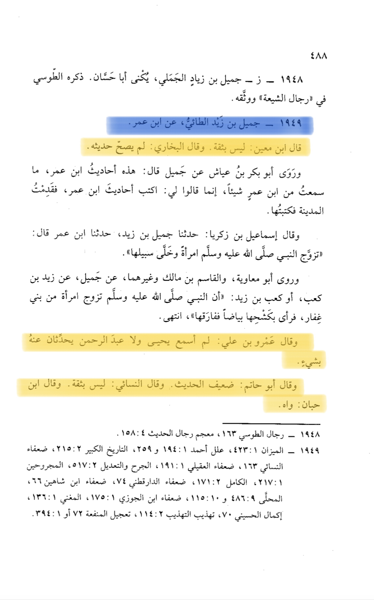
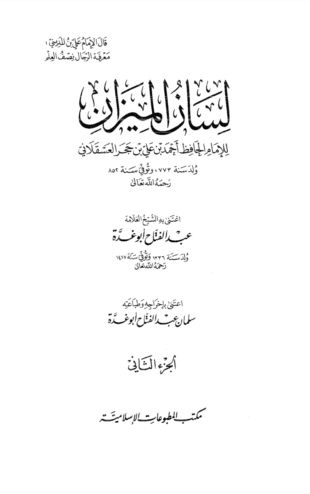
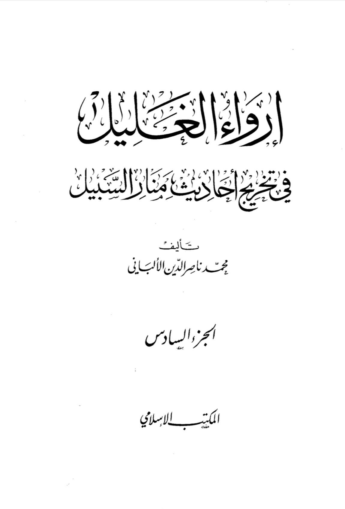
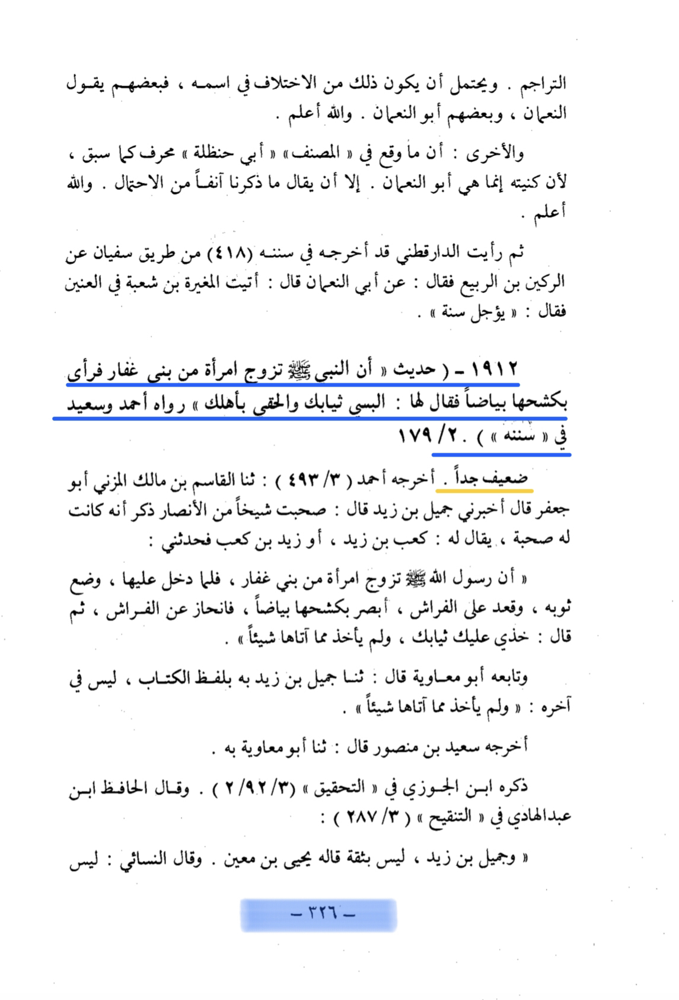
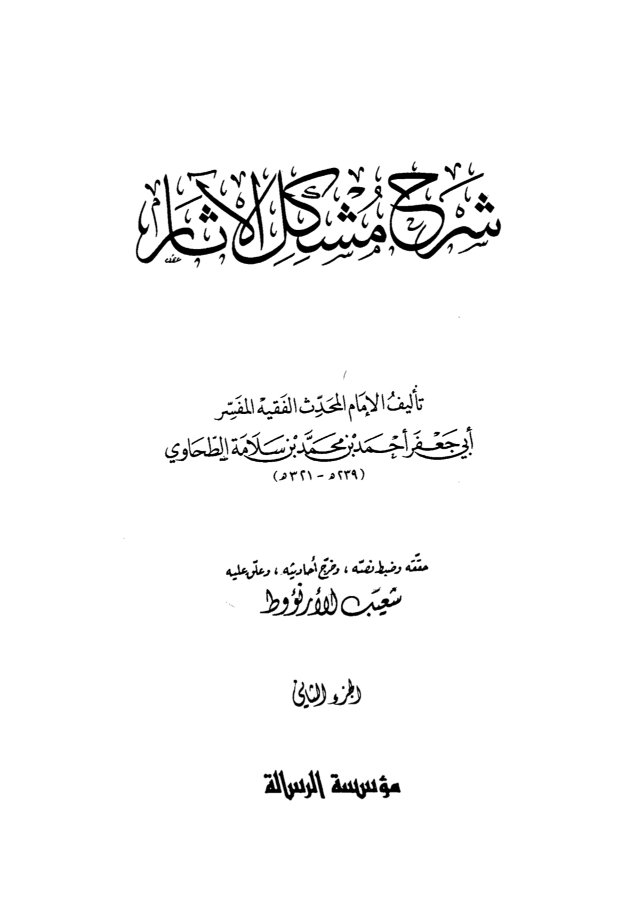
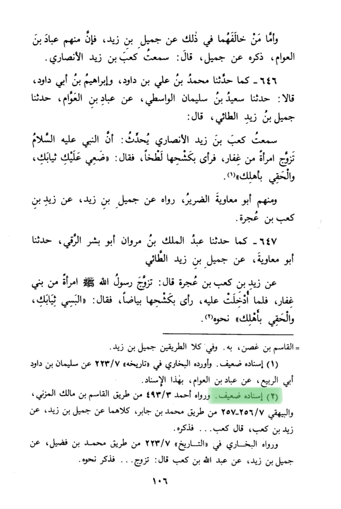
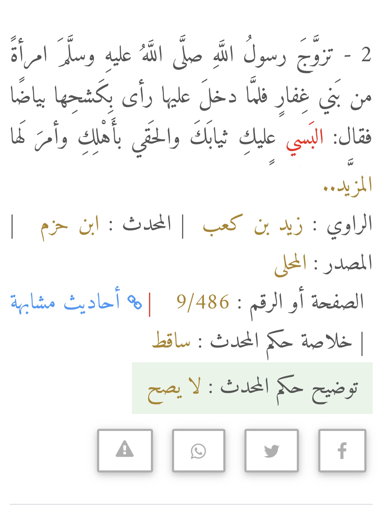
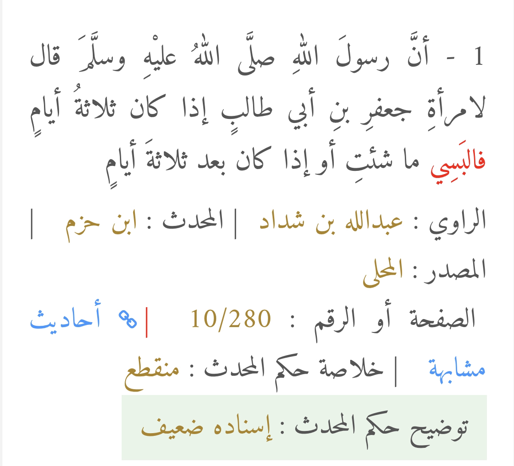

This claim has been found in several hadith that all go back to the same guy whose name is jamil bin ziad is he weak ?
here in lisan al-Mizan vol.2 pg.488 person.1948 by name “jamil bin ziad Al-ta’i” it says ibn ma’in said he isn’t thiqah (trustworthy) al-Bukhari said his hadith haven’t been true Amr bin Ali said I never heard yehia or abdulrahman report from him abu hatim said da’if (weak narrator) in hadith (narration)
al-nasa’i said he isn’t thiqah (trustworthy) ibn hian said wahy (basically he is nothing) al-baghawy said he is weak”


here in irwaa al-ghalil by al-albani volume 6 page number 226 hadith number 1912 is the hadith we are talking about al-albani mentions the hadith then it is da’if jidan (very weak narration) and goes on to list the same reasons we did he also debunks every isnad for it


and here in sharh mushkil al-athar by al-tahawi and revised by al-arna’ut volume 2 page number 104-106 he lists all narration of this kind and al-arna’ut weakns them all he says it is da’if al-isnad (weak chain of transmission) he does so with every hadith of this kind.


Ibn hazm also mentions a few of them in al-muhly lil athar and he weakns them


Basically the hadith is unauthenticated and I doubt this ever happened why ? Because he only divorced once and he brought back hafsa and he wasn’t allowed to add or divorce or change any new wives as in the Qūr’ānīc passage (33:51-52)